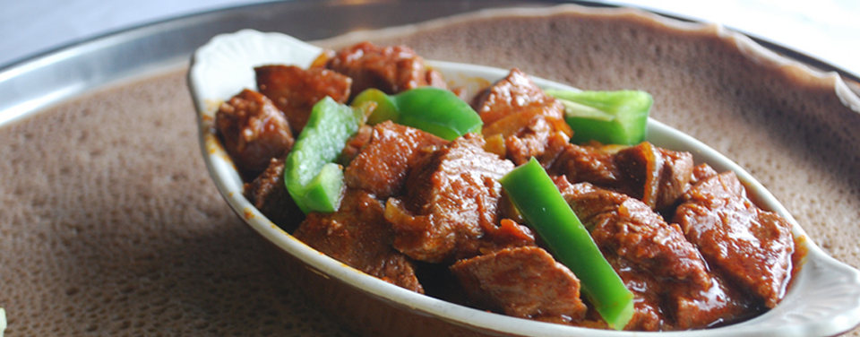
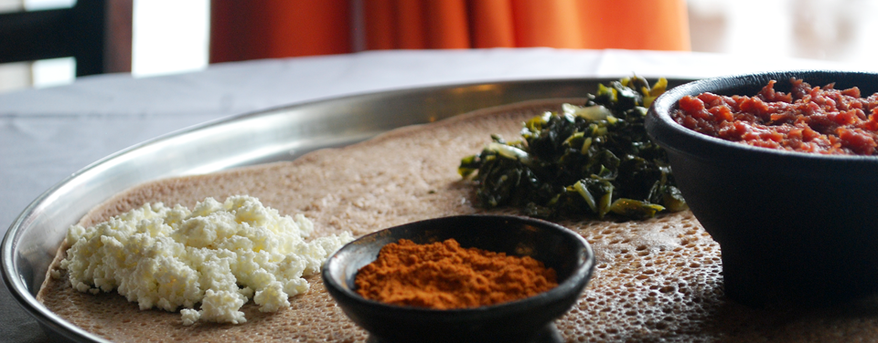
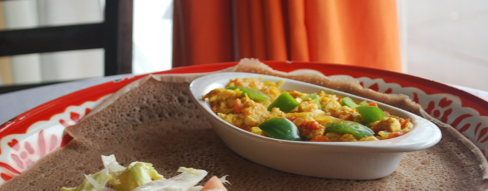
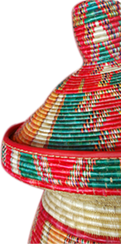

<!DOCTYPE>

<html>

	<head>
		<title>Enat Kitchen</title>

		<link type="text/css" href="styles.css" rel="stylesheet" />
		<link type="text/css" href="grid_styles.css" rel="stylesheet" />
		
		<meta http-equiv="Content-Type" content="text/html; charset=utf-8" />
		
		<link rel='stylesheet' type='text/css' media='all' href='reset.css' />
	    <link rel='stylesheet' type='text/css' media='all' href='grid.css' />
		<link rel='stylesheet' type='text/css' media='all' href='styles.css' />
		
		<!-- @fontface -->
		<link rel='stylesheet' type='text/css'  href='type/Quattrosans.css' />
		<link rel='stylesheet' type='text/css' href='type/puritan.css' />

		
		<!--Jquery library-->
		<script type="text/javascript" src="http://ajax.googleapis.com/ajax/libs/jquery/1.5/jquery.min.js"></script>
		<script src="http://ajax.googleapis.com/ajax/libs/jqueryui/1.8/jquery-ui.min.js"></script>
		<script src="http://ajax.googleapis.com/ajax/libs/jqueryui/1.8/jquery-ui.min.js"></script>
		  		
		<!--Cycle Plugin-->
  		<script type="text/javascript" src="http://cloud.github.com/downloads/malsup/cycle/jquery.cycle.all.latest.js"></script>
		<script type="text/javascript">
			
			$(document).ready(function() {
   			 $('.slideshow-pictures').cycle({
				fx: 'fade' 
			});
		});
		</script>
	
	</head>

	<body>
		
			<div id="header-wrap">
				
				<div id="header" class="container_12">
				
					<div id="header_contact" class="grid_8 suffix_4">
						<h6>Mon-Sat 11:30AM - 10:00PM<br>
						(503)285-4867</h6>
					</div><!--end header contact-->
					
									
					<div id="nav" class="grid_6 suffix_2">
						<ol>
							<li><a href="#">press</a></li>
							<li><a href="#">menu</a></li>
							<li><a href="#">our story</a></li>
							<li><a href="#">contact</a></li>
						</ol>
					</div><!--nav-->

					<div id="logo" class="grid_3 prefix_3">
						<a href="index.html"></a>
					</div><!--logo-->

				</div><!--end header-->
			</div><!--end header wrap-->
			
			
			<div id="main-wrapper">
				<div id="menu" class="container_12">
					
					<div id="nav_selector" class="grid_4">	
					<div class="circle_selector">
						
					</div><!-- end circle_selector -->
				</div><!-- end nav_selector -->
				
					<div id="slideshow" class="container_12">
						<div class="slideshow-pictures grid_12">				
							
							
							
							
							
						</div><!--END SLIDESHOW-pictures-->
						
						<div class="callout_bar grid_12">
							<h1>MENU</h1>
						</div><!-- end callout_bar -->
					</div><!-- end slideshow -->
					
						<div id="about_food" class="container_12">
							<div class="about_text grid_7">
								<h3 class="brown">A little about Ethiopian Food</h3>
								<p>Ethiopian cuisine characteristically consists of spicy vegetable and meat dishes; usually in the form of what which is a thick stew. This 								is served on top of injera, a large sourdough flatbread; which is 20 inches in diameter and made out from fermented Teff flour.</p>
								<p>Ethiopians eat with their fight hands, using pieces of injera to pick up bites of entrees and side dishes. Feel free to eat with your hands or 								with a fork!</p>
							</div><!-- end about_text -->
							
							<div class="food_terms grid_4">
								<div class="food_terms_text">
									<h3 class="red">Ethiopian Food Terms</h3>
									<ul>
										<li><p><span class="red-text">Wat</span> A thick stew made of vegetables, meat, greens, or legumes.</p></li>
										<li><p><span class="red-text">Injera</span> A large sour-dough flatbread made of flour from the Teff plate.</p></li>
										<li><p><span class="red-text">Tibs</span> Sautéed meat or vegetables</p></li>
										<li><p><span class="red-text">Mitmita</span> A spicy powdered seasoning that contains African birdseed chili peppers, cardamon,
										 cloves, salt, and other spices.</p></li>
									</ul>
								</div><!-- end food_terms_text -->
							</div><!-- food_terms -->
						</div><!-- end about_food -->
						
						<div class="add-bottom-margin grid_12"></div><!-- spacing -->
							
						<div id="favorites" class="container_12">
							<div class="favorites_header grid_12">
								<h4>Some of our Favorites</h4>
							</div><!-- favorites_header -->
							
							<div class="favorites_pictures grid_12">
								
							</div><!-- favorites_pictures -->
							
							<div class="favorites_names grid_12">
								<ul>
									<li class="favorite_name1">Direk Tibs</li>
									<li class="favorite_name2">Beef Combo</li>
									<li class="favorite_name3">Kunta Firfir</li>
									<li class="favorite_name4">Enat Special</li>
									<li class="favorite_name5">Kilfo</li>
									<li class="favorite_name6">Beef Tibs</li>
								</ul>
							</div><!-- favorites_names -->
						</div><!-- end favorites -->
					
					<div id="food_menu" class="grid_7">
						
						<div id="appetizers">
							<div class="items grid_7">
								
								<div class="heading">
									<h4 class="yellow-text section_title">APPETIZERS</h4>
								</div>
							
								<div class="add-bottom-margin grid_7"></div><!-- spacing -->
							
								<ul>
									<li><p><span class="yellow-text">Azifa Fitfit</span>  Pieces of injera mixed with whole lentils, onions, green peppers,
									 and olive oil in a traditional sauce. $5</p></li>
									<li><p><span class="yellow-text">Timatim Fitfit</span>  Pieces of injera mixed with tomatoes, jalapeño, onion, oil, and vinegar. $5</p>
									</li>
									<li><p><span class="yellow-text">Salad</span>  Fresh lettuce, tomatoes, and onions tossed in our homemade dressing. $5</p></li>
								</ul>
							</div><!-- end items -->
						</div><!-- end appetizers -->
							
							<div class="add-bottom-margin grid_7"></div><!-- spacing -->
						
						<div id="entrees">
							<div class="items grid_7">
								<div class="heading">
									<h4 class="red-text section_title">ENTREES</h4>
								</div>
							
								<div class="add-bottom-margin grid_7"></div><!-- spacing -->
								
								<ul>
									<li><p><span class="red-text">Key wot</span>  Choice of beef, lamb, or vegetarian stew cooked in berbere sauce with ginger and garlic.
									 Beef $10 Lamb $11 Vegetarian $9</p></li>
									<li><p><span class="red-text">Alicha wot</span>  Choice of curried beef or lamb stew cooked with garlic and ginger. Beef $10 Lamb $11
									</p></li>
									<li><p><span class="red-text">Tibs</span>  Choice of beef, lamb, or chicken cut into cubes marinated in fresh garlic and sautéed with
									green peppers and onions. Beef or Chicken $10 Lamb $11</p></li>
									<li><p><span class="red-text">Gored gored</span>  Lean beef tossed in seasoned butter and a homemade chili sauce. SERVED RARE $10</p></li>
									<li><p><span class="red-text">Qunta firfir</span>  Dried beef jerky, mixed in with pieces of injera and wot. $11</p></li>
									<li><p><span class="red-text">Direk tibs</span>  Dried beef seasoned with garlic, black pepper, onion, green chilies, and a touch of 										rosemary. $11</p></li>
									<li><p><span class="red-text">Kitfo</span>  Fresh minced lean beef seasoned with butter and mitmia. Served rare, medium, or well. $11
									</p></li>
									<li><p><span class="red-text">Beef combo</span>  A serving of three of our Ethiopian meat specialties: Key wot, Alicha, and Tibs. $13
									</p></li>
									<li><p><span class="red-text">Enat Special</span>  Fresh minced lean been seasoned with jalapeño, onion, mitmita, and butter. $12</p></li>
									<li><p><span class="red-text">Chicken and Spinach</span>  Glazed chicken with spinach cooked with fresh garlic, ginger, and other house 									spices. $11</p></li>
									<li><p><span class="red-text">Shiro wot</span>  Spiced split peas cooked in berbere sauce and special spices. $9</p></li>
									<li><p><span class="red-text">Gomen</span>   Collard greens cooked with garlic, ginger, and other special spices. $9</p></li>
									<li><p><span class="red-text">Atkilt</span>  Cabbage, potatoes, and carrots spiced with garlic, ginger, and other house spices. $9</p></									li>
									<li><p><span class="red-text">Veggie combo</span>  Combination of four vegetarian dishes. $11</p></li>
								</ul>
							</div><!-- end items -->
						</div><!-- end entrees -->
					</div><!-- end food_menu (column1) -->
	
					<div id="drink_menu" class="grid_3 prefix_1">
						<div id="drinks" class="grid_3">
							<div class="heading">
								<h4 class="brown-text section_title">DRINKS</h4>
							</div><!-- end heading -->
							
							<div class="add-bottom-margin grid_3"></div><!-- spacing -->
							
							<div class="non-alcoholic">
								<ul>
									<li><h4 class="brown-text">Non-Alcoholic $2</h4></li>
									<li>Coffee</li>
									<li>Tea</li>
									<li>Juice</li>
									<li>Bottled Water</li>
									<li>Water</li>
									<li>Traditional Ethiopian Coffee  $4</li>
								</ul>
							</div><!-- end non-alcoholic -->
							
							<div class="add-bottom-margin grid_3"></div><!-- spacing -->
		
		
							<div class="beer">
								<ul>
									<li><h4 class="brown-text">Beer $3</h4></li>
									<li>Heineken</li>
									<li>Corona</li>
									<li>Black Butte</li>
									<li>Fat Tire</li>
									<li>Mirror Pond</li>
									<li>Hefeweizen</li>
								</ul>
							</div><!-- end beer -->
							
							<div class="add-bottom-margin grid_3"></div><!-- spacing -->
							
							<div class="ethiopian-beer">
								<ul>
									<li><h4 class="brown-text">Ethiopian Beer $4</h4></li>
									<li>Merta</li>
									<li>Harar</li>
									<li>Bedele</li>
									<li>Hakim Stout</li>
									<li>St. George</li>
								</ul>
							</div><!-- ethiopian-beer -->
							
							<div class="add-bottom-margin grid_3"></div><!-- spacing -->
							
							<div class="wine">
								<ul>
									<li><h4 class="brown-text">Wine</h4></li>
									<li>House Red or White  $4</li>
									<li>Bottle  $16</li>
									<li>Ethiopian Wine  $5</li>
									<li>Bottle  $20</li>
								</ul>
							</div><!-- end wine -->
						
							<div class="image grid_3">
								
							</div><!-- end image (background image) -->

						</div><!-- end drinks -->
					</div><!-- end drink_menu (column2) -->
					
				</div><!-- end menu -->
			</div><!-- end main-wrapper --> 

			<div id="footer-wrapper">
				<div id="top-footer-wrapper">
					
					<div id="footer" class="container_12">

						<div id="sub_footer_1" class="grid_2">
							<div class="hours grid_2">
								<h6 class="caps">Hours</h6>
								<h6>OPEN Mon-Sat</h6> 
								<p>11:30-10:00pm</p>
							</div><!-- end contact_heading -->
						</div><!--END SUB FOOTER1 ((phone & address/right))-->
						
		
						<div id="sub_footer_2" class="grid_7">
							<div class="location grid_7">
								<h6 class="grid_7 caps">Location</h6>
								<a href="#" class="grid_3"></a>
								<p class="grid_3 location_text">Located a stones throw away from Portland Community College’s Cascade Campus on N. Killingsworth and 										Haight St.<p>
							</div><!-- end contact_heading -->
						</div><!--END SUB FOOTER 2 ((location & picture/middle))-->
						
						
						<div id="sub_footer_3" class="grid_2">
							<div class="contact grid_3">
								<h6 class="caps">Contact</h6>
								<p>(503) 285-4867</p>
								<h6>300 N. Killingsworth</br>Portland, OR 97017</h6>
							</div><!-- end contact_heading -->
						</div><!--END SUB FOOTER 3 ((hours/left))-->
				
					</div><!-- end footer -->
				</div><!--END top-footer-wrapper-->

				
			<div id="bottom-footer-wrapper">
				
				<div id="footer" class="container_12">
				
					<div id="created-by" class="grid_5 suffix_3">
						<h6>Created by PSU students Jamie Godfrey and Katie Rassi</h6>
					</div><!-- end created-by -->
					
					<div id="bottom_nav" class="grid_4">
						<ol>
							<li class="line"><a href="#">press</a></li>
							<li class="line"><a href="#">menu</a></li>
							<li class="line"><a href="#">our story</a></li>
							<li><a href="#">contact</a></li>
						</ol>
					</div><!--END BOTTOM NAV-->
			
				</div><!-- footer -->		
			</div><!-- end bottom-footer-wrapper -->
		</div><!-- end footer wrapper -->

	</body>
</html>